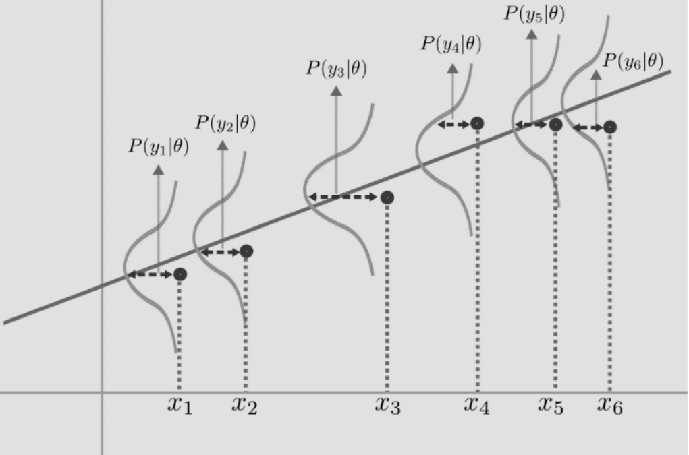

Make an explicit assumption about what distribution the data was modeled from
Set the parameters of this distribution so that the data we observe is most likely i.e maximize the likelihood of our data
For a simple example of coin toss, we can see this as maximizing the probability of observing heads from a binomial distribution:
p(z1,...,zn)=p(z1....,zn∣θ)
If we assume I.I.D condition, we should be able to break this down into:
p(z1∣θ)p(z2∣θ)....p(zn∣θ)
Formally, let us define a likelihood function as:
L(θ)=i=1∏Np(zi∣θ)
Now, our task it to find the θ^ that maximizes this likelihood:
θ^MLE=θargmaxi=1∏Np(zi∣θ)
Instead of maximizing a product, we can also view this problem as minimizing a sum if we take the log of all values:
θ^MLE=θargmaxi=1∑NLog(p(zi∣θ))
Let us use this idea for the regression problem. We assume that our outputs are distributed in a gaussian manner around the line w have to find out. This basically means that our ϵ is a gaussian Noise that is messing up our outputs from the fundamental distribution, as shown below

Thus, our equation for getting this probability of our output would be :
p(yi∣xi;wi,σ2)=σ2π1exp{2σ2−(yi−xiw)2}
Our task, therefore, is to estimate w^ such that the likelihood of p is maximized. This, in other words, means find the value of w that maximizes the above expression:
This is basically the same as the normal expression we had, the only difference being the normalizing factor σ, if we change the negative maximization to minimization: